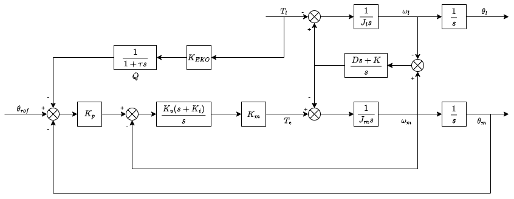
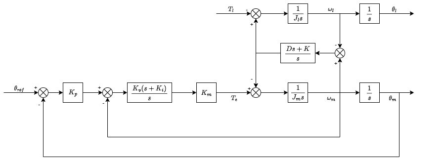
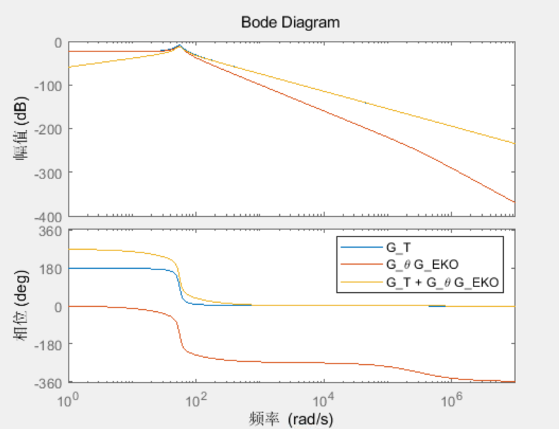
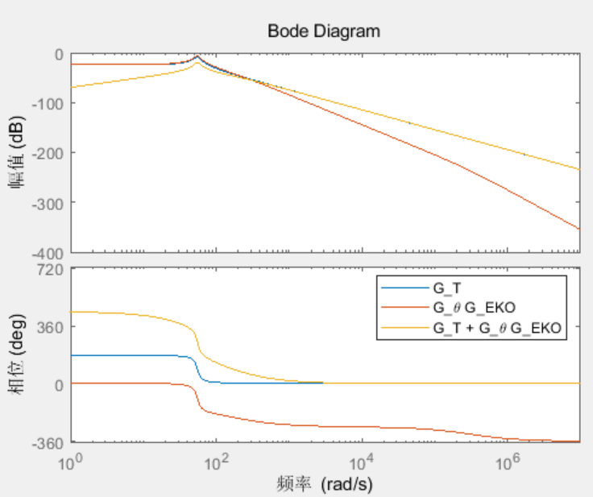
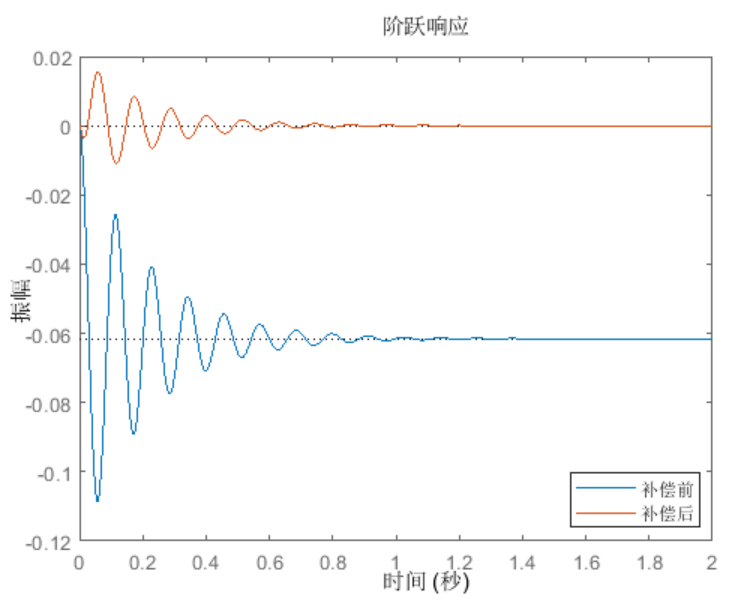

EKO柔性补偿优化
1. EKO(Elastische Kompensation Optimierung)

EKO根据负载转矩和关节柔性补偿位置指令。
EKO关注的是末端的位置精度，对于半闭环系统，末端位置与指令位置是存在误差的，这个误差主要由负载产生。对于单轴伺服，我们认为可以由MCG矩阵计算出来，是一个已知量：
末端位置由指令和负载两部分组成：
如果要使末端位置和期望位置相同，即，那么位置指令需要进行一定补偿：
EKO就是根据计算的，通过增益和低通滤波器（Q），补偿给位置指令的方法。
这两个参数与关节的阻尼和刚度相关：
在PPI-EKO的优化过程中的第二步就是调节这两个系数。
2. 传函推导

由位置环、速度环，可得：
将 代入：
得到：
由Cramer法则得到：
设阻尼，整理得到：
其中：
3. EKO推导
如果要使末端位置和期望位置相同，即，那么：
阻尼不为0时：
其中
EKO的方法：
与原式相比：
省略了后面部分：
根据终值定理：
当系统稳定时，未补偿部分无静差。无静差的前提的是弹性系数完全准确，而这个系数无法完全测准，所以要根据实际末端效果进行调试。
不只是静差，因为是一阶低通，应该对一阶动态响应也有帮助。猜测这个滤波器可能二阶或者更高阶效果更好，但更难调。
4. bode图

上图蓝色是扰动传函，红色是补偿值，黄色为补偿后。
可以看到补偿后相比于补偿前低频段有效果，但反共振点处几乎没有变化。
加入超前滞后（lead lag），有明显效果：


5. 前馈影响
如果在不加前馈时有效，那么在加入前馈时应该补一个：